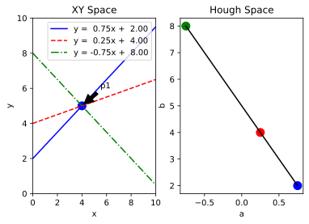
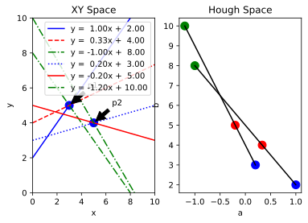

Robot Vision - Hough Transform
Jacky Baltes
National Taiwan Normal University
Taipei, Taiwan
jacky.baltes@ntnu.edu.tw

Hough Transform
- The Hough Transform is a methodology and algorithm to find complex shapes inside of an image
- It is applied to the output of edge detectors or other feature detectors
- It's most popular use is in detecting lines and line segments
url = 'https://i.postimg.cc/3rBpv96M/image.png'
img = io.imread( url )
img = cv2.resize(img, (640, 480 ) )
fig = plt.figure( dpi = 300 )
ax1 = fig.add_subplot(1,1,1)
ax1.set_title('Original Image')
ax1.imshow(img, interpolation = 'bicubic')
ax1.set_xticks([])
ax1.set_yticks([])
img_ = addJBFigure("orig", 0, 0, fig )
plt.close()
kernel = 5 #@param ["3", "5", "7", "9", "11"] {type:"raw"}
fig = plt.figure( dpi=300 )
ax1 = fig.add_subplot(3,2,1)
ax1.set_title('Original Image')
ax1.imshow(img, interpolation = 'bicubic')
ax1.set_xticks([])
ax1.set_yticks([])
gray = cv2.cvtColor( img, cv2.COLOR_RGB2GRAY );
ax2 = fig.add_subplot(3,2,2)
ax2.set_title('Converted to Gray')
ax2.imshow(gray, cmap = 'gray')
ax2.set_xticks([])
ax2.set_yticks([])
sobelX = cv2.Sobel( gray, cv2.CV_32F, 1, 0, ksize= kernel)
sobelX = np.abs(sobelX)
sobelX = sobelX / np.max(sobelX)
ax3 = fig.add_subplot(3,2,3)
ax3.set_title('Sobel X (kernel {})'.format(kernel))
ax3.set_xticks([])
ax3.set_yticks([])
ax3.imshow(sobelX, cmap = 'gray')
sobelY = cv2.Sobel( gray, cv2.CV_64F, 0, 1, ksize= kernel)
sobelY = np.abs(sobelY)
sobelY = sobelY / np.max(sobelY)
ax4 = fig.add_subplot(3,2,4)
ax4.set_title('Sobel Y (kernel {})'.format(kernel))
ax4.set_xticks([])
ax4.set_yticks([])
ax4.imshow(sobelY, cmap = 'gray')
laplacian = cv2.Laplacian( gray, cv2.CV_32F )
laplacian = np.abs(laplacian)
laplacian = laplacian / np.max( laplacian )
ax5 = fig.add_subplot( 3, 2, 5 )
ax5.set_title( 'Laplacian')
ax5.set_xticks([])
ax5.set_yticks([])
ax5.imshow( laplacian, cmap = 'gray')
canny = cv2.Canny( gray, 50, 300 )
ax6 = fig.add_subplot(3,2,6)
ax6.set_title('Canny')
ax6.set_xticks([])
ax6.set_yticks([])
ax6.imshow( canny, cmap = 'gray')
img_ = addJBFigure("edge", 0, 0, fig )
plt.close()
Edge Detection
Hough Lines Motivation
- Initially, Hough developed the Hough transform to deal with the problem of detecting lines in an image.
- To reason about lines in images requires reasoning about collections of pixels. To form a particular shape, the pixels need to be arranged in such a way, that they form the shape. The output of the procedure is a line.
A line can be represented in many different ways. Representing a line as an array of pixels is a cumbersome and inefficient approach. Instead, mathematically lines are often represented by a slope and line intercept (slope-intercept format).
y=ax+b
The brilliant insight by Hough in 1959, was to realize that a collection of points can be converted to the mathematical representation by converting each pixel into the Hough space, that is the space of parameters that map to a line.
Given an edge pixel at position (xp,yp) , we assume that this pixel is part of a line. So we know that
yp=a∗xp+b
for some line parameters a (slope) and b (line intercept, that is the point where the line intersects with the vertical line x=0 ).
Assume that we know that the slope of the line a, then we can calculate what the line intercept of the line b must be, given that a point xp , yp is on that line with slope a.
b=−a∗xp+yp
The equation above is the equation for a line in the Hough space with slope −xp and line intercept yp .
p1 = [4, 5] #@param {type:"raw"}
p1 = np.array(p1)
fig = plt.figure()
ax1 = fig.add_subplot(1,2,1)
ax1.set_title('XY Space')
ax1.set_xlim((0,10))
ax1.set_ylim((0,10))
ax1.set_xlabel('x')
ax1.set_ylabel('y')
offset = np.array([1.5,1])
ax1.plot(p1[0], p1[1], 'b.', markersize=20)
ax1.annotate('p1', xy = p1, xytext=p1+offset, arrowprops=dict(facecolor='black', shrink=0.1))
ax2 = fig.add_subplot(1,2,2)
ax2.set_title('Hough Space')
ax2.set_xlabel('a')
ax2.set_ylabel('b')
hmin = None
hmax = None
linestyles=['b-', 'r--', 'g-.']
points = [ [0,2], [0,4], [0,8] ]
for i in range( len(points) ):
x1,y1 = points[i]
pL1 = np.array([x1,y1])
d = p1 - pL1
pL2 = pL1 + d * 10
#print(pL1, pL2, d)
a1 = d[1]/d[0]
b1 = y1
if ( hmin is None ) or ( a1 < hmin[0]):
hmin = [ a1, b1 ]
if ( hmax is None ) or ( a1 > hmin[0] ):
hmax = [a1, b1 ]
ax1.plot( [pL1[0], pL2[0]], [ pL1[1], pL2[1] ], linestyles[i], label = "y = {0:5.2f}x + {1:5.2f}".format(a1, b1) )
ax2.plot( [a1], [b1], linestyles[i][0]+'.', markersize=20)
if ( hmin is not None ) and ( hmax is not None ):
ax2.plot([hmin[0], hmax[0]], [hmin[1], hmax[1]], 'k-')
ax1.legend()
#ax2.legend()
h1 = addJBFigure( "h1", 0, 0, fig )
plt.close()
Hough Example

- As shown in the figure above, all possible lines through a point p1 result in a line in the Hough space.
- If we now add another point p2 , then all possible lines through that point will result in a different line in the Hough space.
- The intersection of those two lines will give us a point in the Hough space, which corresponds to the line that goes through both points p1 and p2 .
p1 = [3, 5] #@param {type:"raw"}
p2 = [5, 4] #@param {type:"raw"}
p1 = np.array(p1)
p2 = np.array(p2)
fig = plt.figure()
ax1 = fig.add_subplot(1,2,1)
ax1.set_title('XY Space')
ax1.set_xlim((0,10))
ax1.set_ylim((0,10))
ax1.set_xlabel('x')
ax1.set_ylabel('y')
offset = np.array([1.5,1])
ax1.plot(p1[0], p1[1], 'b.', markersize=20)
ax1.annotate('p1', xy = p1, xytext=p1+offset, arrowprops=dict(facecolor='black', shrink=0.1))
ax1.plot(p2[0], p2[1], 'b.', markersize=20)
ax1.annotate('p2', xy = p2, xytext=p2+offset, arrowprops=dict(facecolor='black', shrink=0.1))
ax2 = fig.add_subplot(1,2,2)
ax2.set_title('Hough Space')
ax2.set_xlabel('a')
ax2.set_ylabel('b')
hmin = None
hmax = None
linestyles=['b-', 'r--', 'g-.']
points = [ [0,2], [0,4], [0,8] ]
for i in range( len(points) ):
x1,y1 = points[i]
pL1 = np.array([x1,y1])
d = p1 - pL1
pL2 = pL1 + d * 10
#print(pL1, pL2, d)
a1 = d[1]/d[0]
b1 = y1
if ( hmin is None ) or ( a1 < hmin[0]):
hmin = [ a1, b1 ]
if ( hmax is None ) or ( a1 > hmin[0] ):
hmax = [a1, b1 ]
ax1.plot( [pL1[0], pL2[0]], [ pL1[1], pL2[1] ], linestyles[i], label = "y = {0:5.2f}x + {1:5.2f}".format(a1, b1) )
ax2.plot( [a1], [b1], linestyles[i][0]+'.', markersize=20)
if ( hmin is not None ) and ( hmax is not None ):
ax2.plot([hmin[0], hmax[0]], [hmin[1], hmax[1]], 'k-')
linestyles=['b:', 'r-', 'g-.']
points = [ [0,3], [0,5], [0,10] ]
hmin = None
hmax = None
for i in range( len(points) ):
x1,y1 = points[i]
pL1 = np.array([x1,y1])
d = p2 - pL1
pL2 = pL1 + d * 10
#print(pL1, pL2, d)
a1 = d[1]/d[0]
b1 = y1
if ( hmin is None ) or ( a1 < hmin[0]):
hmin = [ a1, b1 ]
if ( hmax is None ) or ( a1 > hmin[0] ):
hmax = [a1, b1 ]
ax1.plot( [pL1[0], pL2[0]], [ pL1[1], pL2[1] ], linestyles[i], label = "y = {0:5.2f}x + {1:5.2f}".format(a1, b1) )
ax2.plot( [a1], [b1], linestyles[i][0]+'.', markersize=20)
if ( hmin is not None ) and ( hmax is not None ):
ax2.plot([hmin[0], hmax[0]], [hmin[1], hmax[1]], 'k-')
ax1.legend()
#ax2.legend()
h2 = addJBFigure("h2", 0, 0, fig)
plt.close()
Hough Lines

- However, since there will be noise in the vision system, the various lines (one for each edge pixel) in the Hough space will usually not intersect at exactly one point.
- One solution to this problem would be to calculate the point that is closest to all lines, or the point that minimizes the squared distance to all lines.
- This approach does not work if there are multiple lines in an image. In this case, there would be multiple intersection points and the point closest to all of them is in general useless.
- Hough overcame this problem by discretizing the Hough space and using an accumulator. So the Hough space is a table of entries, which are initialized to 0.
- For every edge pixel e , the algorithm iterates through the discretization of a and calculates the corresponding parameters b . The entry in the table for a , b is then incremented. One can interpret this, as an edge pixel voting for possible lines.
- After all edge pixels have been processed, the Hough line algorithm returns the line corresponding to the Hough table entry with the maximum number of votes.
Parametric equation for a line
The slope-intercept form of the equation is a bad choice as accumulator parameter since it ranges from 0 to \(\infty\)
Instead we use the following parameterization:
\[ \rho = \cos(\alpha)x + \sin(\alpha)y \]
kernel = 7 #@param ["3", "5", "7", "9", "11"] {type:"raw"}
THRESHOLD = 0.3#@param
gray = cv2.cvtColor( img, cv2.COLOR_RGB2GRAY );
sobelX = cv2.Sobel( gray, cv2.CV_32F, 1, 0, ksize= kernel)
sobelY = cv2.Sobel( gray, cv2.CV_32F, 0, 1, ksize= kernel)
edges = np.abs(sobelX) + np.abs(sobelY)
edges = edges / np.max(edges)
fig = plt.figure( figsize=( 15, 15) )
ax1 = fig.add_subplot(2,2,1)
ax1.set_title('Edge Detection')
thres = np.zeros( edges.shape )
idx = edges > THRESHOLD
print('idx', idx[0:10])
thres[idx] = 1.0
ax1.imshow(edges, cmap="gray")
ax2 = fig.add_subplot(2,2,2)
ax2.set_title('Edge Pixels')
ax2.hist(edges)
ax3 = fig.add_subplot(2,2,3)
ax3.set_title("Threshold Edge Pixels")
ax3.imshow( thres, cmap="gray" )
img_ = addJBFigure("edges3", 0, 0, fig )
plt.close()
idx [[False False False ... False False False] [False False False ... False False False] [False False False ... False False False] ... [False False False ... False False False] [False False False ... False False False] [False False False ... False False False]]
Edge Detection + Threshold

def findHoughLines( idx, thetaBuckets, rhoBuckets, imageHypot ):
widthHough = thetaBuckets
heightHough = rhoBuckets
hough = np.zeros((heightHough, widthHough))
for ppi in range(len(idx[0])):
py,px = idx[0,ppi], idx[1,ppi]
for theta_i, theta in enumerate( np.linspace( 0, 2.0 * math.pi, widthHough ) ):
rho = math.cos(theta)*px + math.sin(theta)*py
if rho > 0:
rho_i = int(rho / imageHypot * rhoBuckets )
#print('theta', theta, 'theta_i', theta_i, 'rho', rho, 'rho_i', rho_i, 'imageHypot', imageHypot )
hough[rho_i, theta_i] = hough[rho_i, theta_i] + 1
return hough
eidx = np.vstack( np.where( edges > THRESHOLD ) )
imageHypot = math.hypot(thres.shape[0], thres.shape[1] )
rhoBuckets = int(imageHypot)+1
thetaBuckets = 180
#eidx = np.array([ [ 5, 7, 9], [5, 7, 9 ] ] )
#imageHypot = 15
#rhoBuckets = 15
h = findHoughLines( eidx, thetaBuckets, rhoBuckets, imageHypot )
def drawHoughSpace(ax, h, imageHypot ):
height, width = h.shape
#xs = np.linspace(0,math.pi * 2, width )
xs = np.linspace(0,360.0, width )
ys = np.linspace(0, imageHypot, height )
print( len(xs), len(ys) )
xss, yss = np.meshgrid( xs, ys )
ax.scatter( xss, yss, 30, c=h )
rho_i, theta_i = np.unravel_index(np.argmax(h), h.shape)
theta = xs[theta_i] # +(0.5*width) #(theta_i + 0.5)/width * 360.0
rho = ys[rho_i] # + ( 0.5 * height ) # * imageHypot
ax.scatter([theta], [rho], 30, color='red')
print( img.shape, h.shape )
fig = plt.figure()
ax = fig.add_subplot(1,1,1)
drawHoughSpace( ax, h, imageHypot )
img_ = addJBFigure("hough1", 0, 0, fig )
plt.close()
(480, 640, 4) (801, 180) 180 801
Hough Space Visualization

print(np.max(h))
print(np.unravel_index(np.argmax(h), h.shape))
rho_i, theta_i = np.unravel_index(np.argmax(h), h.shape)
theta = (theta_i + 0.5)/thetaBuckets * 360.0/180.0*math.pi
rho = (rho_i + 0.5) * imageHypot/rhoBuckets
print( f"Found line with equation {rho} = cos( {theta/math.pi*180.0} ) * x + sin( {theta/math.pi*180.0} ) * y" )
171.0 (193, 44) Found line with equation 193.25842696629215 = cos( 89.0 ) * x + sin( 89.0 ) * y
def drawLine(ax, rho, theta, size ):
height, width = size[0], size[1]
# rho = x * cos(theta) + y * sin(theta)
# rho - x * cos(theta)/sin(theta) = y
c = math.cos(theta+90.0/180.0 * math.pi)
s = math.sin(theta+90.0/180.0 * math.pi)
if ( abs( c ) > abs( s ) ):
xMin = 0
xMax = width
yMin = rho - xMin * 1/math.tan(theta)
yMax = rho - xMax * 1/math.tan(theta)
col = 'b-'
else:
yMin = 0
yMax = height - 1
xMin = rho - yMin * math.tan(theta)
xMax = rho - yMax * math.tan(theta)
col='g-'
ax.plot( [xMin,xMax], [yMin,yMax], col, linewidth=3 )
kernel = 3 #@param ["3", "5", "7", "9", "11"] {type:"raw"}
THRESHOLD = 0.55 #@param
img = io.imread( url )
img = cv2.resize(img, (320, 240 ) )[20:300,20:220]
gray = cv2.cvtColor( img, cv2.COLOR_RGB2GRAY );
#gray = gray[20:200,20:300]
#gray = np.random.randint(2,size=(10,20), dtype=np.uint8 )*255
gray = np.zeros((20,30), dtype=np.uint8)
#gray[4:,:] = 255
gray[:,26:] = 255
#gray = np.zeros((img.shape), dtype=np.uint8)
#gray[50:200,:] = 255
sobelX = cv2.Sobel( gray, cv2.CV_32F, 1, 0, ksize= kernel)
sobelY = cv2.Sobel( gray, cv2.CV_32F, 0, 1, ksize= kernel)
edges = np.abs(sobelX) + np.abs(sobelY)
#edges = sobelX + sobelY
edges = edges / np.max(edges)
print(edges.shape)
gray=np.zeros((10,20))
edges = np.random.randint(2,size=(10,20), dtype=np.uint8 )*255
edges = edges * np.random.randint(2,size=(10,20), dtype=np.uint8 )*255
edges = edges * np.random.randint(2,size=(10,20), dtype=np.uint8 )*255
#edges[:,15] = 1.0
#edges[0,:] = 1.0
eidx = np.vstack( np.where( edges > THRESHOLD ) )
#print(eidx)
imageHypot = math.hypot(edges.shape[0], edges.shape[1] )
rhoBuckets = int(imageHypot)+1
thetaBuckets = 360
#print("imageHypot", imageHypot, "rhoBuckets", rhoBuckets )
#eidx = np.array([ [ 5, 7, 9], [5, 7, 9 ] ] )
#imageHypot = 15
#rhoBuckets = 15
h = findHoughLines( eidx, thetaBuckets, rhoBuckets, imageHypot )
maxH = np.max(h)
rho_i, theta_i = np.unravel_index(np.argmax(h), h.shape)
theta = (theta_i + 0.5)/thetaBuckets * 360.0/180.0*math.pi
rho = (rho_i + 0.5) * imageHypot/rhoBuckets
print( f"Found line with {h[rho_i,theta_i]} points, equation {rho} = cos( {theta/math.pi*180.0} ) * x + sin( {theta/math.pi*180.0} ) * y" )
fig = plt.figure( figsize=( 15, 15) )
ax1 = fig.add_subplot(2,1,1)
ax1.set_title('Detected Lines')
#print(edges)
ax1.imshow( gray, cmap="gray" )
ax1.scatter(eidx[1,:]+0.5, eidx[0,:]+0.5, 15, color='red')
drawLine(ax1, rho, theta, edges.shape )
ax2 = fig.add_subplot(2,1,2)
ax2.set_title("Hough Space")
ax2.imshow(h)
ax2.scatter([theta_i], [ rho_i], 30, color='red')
ht = addJBFigure("ht", 0, 0, fig )
plt.close()
(20, 30) Found line with 6.0 points, equation 1.4583052027172543 = cos( 132.5 ) * x + sin( 132.5 ) * y

Issues Using Hough Lines
edges = img
eidx = np.vstack( np.where( edges > THRESHOLD ) )
#print(eidx)
imageHypot = math.hypot(edges.shape[0], edges.shape[1] )
rhoBuckets = int(imageHypot)+1
thetaBuckets = 360
#print("imageHypot", imageHypot, "rhoBuckets", rhoBuckets )
#eidx = np.array([ [ 5, 7, 9], [5, 7, 9 ] ] )
#imageHypot = 15
#rhoBuckets = 15
h = findHoughLines( eidx, thetaBuckets, rhoBuckets, imageHypot )
maxH = np.max(h)
rho_i, theta_i = np.unravel_index(np.argmax(h), h.shape)
theta = (theta_i + 0.5)/thetaBuckets * 360.0/180.0*math.pi
rho = (rho_i + 0.5) * imageHypot/rhoBuckets
print( f"Found line with {h[rho_i,theta_i]} points, equation {rho} = cos( {theta/math.pi*180.0} ) * x + sin( {theta/math.pi*180.0} ) * y" )
fig = plt.figure( figsize=( 15, 15) )
ax1 = fig.add_subplot(2,1,1)
ax1.set_title('Detected Lines')
#print(edges)
ax1.imshow( gray, cmap="gray" )
ax1.scatter(eidx[1,:], eidx[0,:], 15, color='red')
drawLine(ax1, rho, theta, edges.shape )
ax2 = fig.add_subplot(2,1,2)
ax2.set_title("Hough Space")
ax2.imshow(h)
ax2.scatter([theta_i], [ rho_i], 30, color='red')
ht2 = addJBFigure("ht2", 0, 0, fig )
plt.close()
Found line with 20.0 points, equation 1.4999814359881924 = cos( 90.5 ) * x + sin( 90.5 ) * y
Incorrect Lines
- The problem is that the Hough algorithm will find the line that is supported by the maximum number of pixels.
- In the example above, it is the incorrect line
- Currrently, the Hough algorithm does not consider the gradient of the edge pixels into consideration
- So edge pixels on vertical edges can vote for horizontal lines
-
We can fix this issue by changing the voting of the pixels
- Restrict votes to what is indicated by the local gradient (pixels detected with Sobel_X cannot vote for horizontal lines)
-
Weighted voting based on local gradient
vote = (1 - diff(local gradient, vote)), wherediffis some function between 0 and 1
Multiple Lines
- To detect multiple lines, we find the next largest maximum in the accumulator that is not too close to the previous maximum
- This is not quite correct, but good enough in practice
- Correct solution - erase edge pixels and re-run complete Hough transform is computationally too expensive
Line Segments
- Usually we are interested in the line segments (start and end of line) instead of infinite length lines
- To find the line segment, we start at one end of the line and keep going until we find an edge pixel (or a minimum number of edge pixels). This defines the start of the line segment.
- Continue along the lines until there are no more edge pixels (or too many missed edge pixels). This defines the end of the line segment.
- Continue processing along the line, as there may be multiple line segments that belong to the same line equation